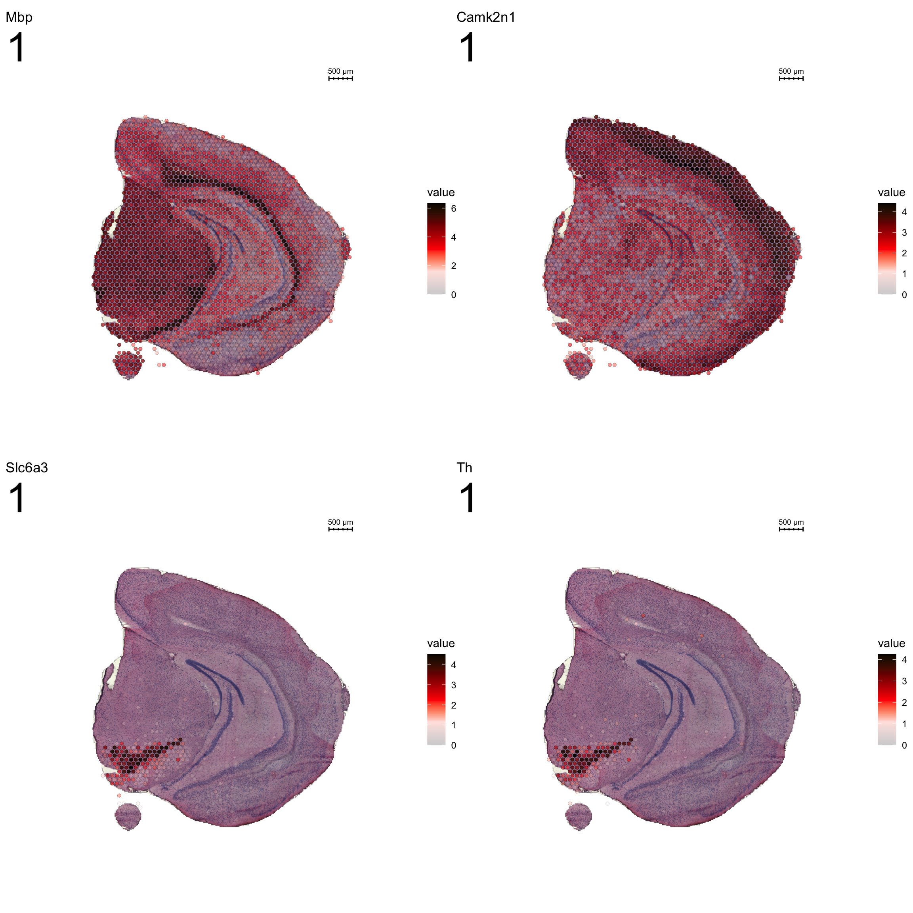

Spatial Features
Last updated: 2020-01-12
Checks: 7 0
Knit directory: STUtility_web_site/
This reproducible R Markdown analysis was created with workflowr (version 1.5.0). The Checks tab describes the reproducibility checks that were applied when the results were created. The Past versions tab lists the development history.
Great! Since the R Markdown file has been committed to the Git repository, you know the exact version of the code that produced these results.
Great job! The global environment was empty. Objects defined in the global environment can affect the analysis in your R Markdown file in unknown ways. For reproduciblity it’s best to always run the code in an empty environment.
The command set.seed(20191031) was run prior to running the code in the R Markdown file. Setting a seed ensures that any results that rely on randomness, e.g. subsampling or permutations, are reproducible.
Great job! Recording the operating system, R version, and package versions is critical for reproducibility.
Nice! There were no cached chunks for this analysis, so you can be confident that you successfully produced the results during this run.
Great job! Using relative paths to the files within your workflowr project makes it easier to run your code on other machines.
Great! You are using Git for version control. Tracking code development and connecting the code version to the results is critical for reproducibility. The version displayed above was the version of the Git repository at the time these results were generated.
Note that you need to be careful to ensure that all relevant files for the analysis have been committed to Git prior to generating the results (you can use wflow_publish or wflow_git_commit). workflowr only checks the R Markdown file, but you know if there are other scripts or data files that it depends on. Below is the status of the Git repository when the results were generated:
Ignored files:
Ignored: .Rhistory
Ignored: .Rproj.user/
Ignored: analysis/getting_started_cache/
Note that any generated files, e.g. HTML, png, CSS, etc., are not included in this status report because it is ok for generated content to have uncommitted changes.
There are no past versions. Publish this analysis with wflow_publish() to start tracking its development.
Finding spatial expression patterns
The strength of untargeted whole transcriptome capture is the ability to perform unsupervised analysis and the ability to find spatial gene expression patterns. We’ve found good use of using non-negative matrix factorization (NMF) to find underlying patterns of transcriptomic profiles. This factor analysis, along with various dimensionality reduction techniques, can all be ran via “RunXXX()”, where X = the method of choice, e.g.:
se <- RunNMF(se, nfactors = 40) #Specificy nfactors to choose the number of factors, default=20.
While RunNMF() is an STUtility add-on, others are supported via Seurat (RunPCA(), RunTSNE, RunICA(), runUMAP() ) and for all of them, the output are stored in the Seurat object.
We can then plot a variable number of dimensions across the samples.
cscale <- c("black", "dark blue", "cyan", "yellow", "red", "dark red")
ST.DimPlot(se,
dims = 1:10,
ncol = 2, # Sets the number of columns at dimensions level
grid.ncol = 2, # Sets the number of columns at sample level
reduction = "NMF",
dark.theme = T,
pt.size = 0.5,
center.zero = F,
cols = cscale)
ST.DimPlot(se,
dims = 11:20,
ncol = 2,
grid.ncol = 2,
reduction = "NMF",
dark.theme = T,
pt.size = 0.5,
center.zero = F,
cols = cscale)ST.DimPlot(se,
dims = 21:30,
ncol = 2,
grid.ncol = 2,
reduction = "NMF",
dark.theme = T,
pt.size = 0.5,
center.zero = F,
cols = cscale)
ST.DimPlot(se,
dims = 31:40,
ncol = 2,
grid.ncol = 2,
reduction = "NMF",
dark.theme = T,
pt.size = 0.5,
center.zero = F,
cols = cscale)
To extract the genes that drives the separation according to the dimensionality reduction, we can use the ProjectDim() function.
ProjectDim(se, reduction = "NMF", dims = c(2,4))factor_ 2
Positive: Gng4, Synpr, Pcp4l1, Gad1, Gpsm1, Pcbp3, Meis2, Ptpro, Shisa8, Dlx1
Cpne4, Pbx3, Inpp5j, Cpne6, Tshz1, Sp8, Doc2g, Dcx, Lgr6, Rasl11b
Negative: Plp1, Pvalb, Mbp, Ptgds, Ttr, Pcp2, Trf, Calb1, Nrgn, Bc1
Sst, Mobp, Gng13, Itpr1, Cck, Ppp1r1b, Vsnl1, Fth1, Hpca, Enc1
factor_ 4
Positive: Nptxr, Lypd1, Nov, Olfm1, Trh, Slc30a3, Ly6h, Hap1, Crym, Enc1
Hpcal1, Ak5, Cck, Atp2b4, Bhlhe22, Gda, Rtn1, Nnat, Pcdh8, Camk2d
Negative: Mbp, Plp1, Mobp, Trf, Pvalb, Apod, Hba-a1, Hbb-bs, Hba-a2, Pcp2
Cnp, Mag, Mal, Pcp4, Plekhb1, Hbb-bt, Cryab, Sept4, Qdpr, Cldn11 An object of class Seurat
37188 features across 12125 samples within 2 assays
Active assay: SCT (18594 features)
1 other assay present: RNA
2 dimensional reductions calculated: NMF, umapClustering
Clustering is a standard procedure in genomic analysis, and the methods for doing so are numerous. Here we demonstrate an example where we use the result of the factor analysis the previous section. Going through the list of factors (e.g. via ST:DimPlot(se, dims = [dims you want to look at])), we can notice dimensions that are “spatially active”, i.e. that seems to confer a spatial pattern along their axis. We can extract these dimensions and use as input to e.g. clustering functions. Here, we use all dimensions from the NMF and construct a Shared Nearest Neighbor (SSN) Graph.
se <- FindNeighbors(object = se, verbose = FALSE, reduction = "NMF", dims = 1:40)
Followed by clustering using a modularity optimizer
se <- FindClusters(object = se, verbose = FALSE)
And plotting of the clusters spatially
library(RColorBrewer)
n <- 19
qual_col_pals = brewer.pal.info[brewer.pal.info$category == 'qual',]
col_vector = unlist(mapply(brewer.pal, qual_col_pals$maxcolors, rownames(qual_col_pals)))
ST.FeaturePlot(object = se, features = "seurat_clusters", dark.theme = T, cols = col_vector, pt.size = 0.5)
If you think that the distribution of clusters gets too cluttered, you can also split the view so that only one cluster at the time gets colored.
ST.FeaturePlot(object = se, features = "seurat_clusters", dark.theme = T, pt.size = 1, split.labels = T, indices = 1)
ST.FeaturePlot(object = se, features = "seurat_clusters", dark.theme = T, pt.size = 1, split.labels = T, indices = 3)
Most variable features
We can take a specific look at some of the most variable features.
head(se@assays$SCT@var.features, 20) [1] "Ttr" "Pcp2" "Ptgds" "Hbb-bs"
[5] "Hba-a1" "Plp1" "Car8" "Hba-a2"
[9] "Mbp" "S100a5" "Hbb-bt" "Penk"
[13] "Pvalb" "Enpp2" "Sst" "Ppp1r1b"
[17] "Gpr88" "1500015O10Rik" "Mobp" "Pcp4" top <- se@assays$SCT@var.features
fts <- c("Ttr", "Mbp", "Nrgn")
for (ftr in fts) {
FeatureOverlay(se,
features = ftr,
sampleids = 1:2,
cols = c("black", "dark blue", "cyan", "yellow", "red", "dark red"),
pt.size = 0.5,
pt.alpha = 0.5,
dark.theme = T)
}Compare graph embeddings
Another useful feature is that you can now compare the spatial distribution of a gene with the typical “graph embeddings” s.a. UMAP and t-SNE.
# Run UMAP
se <- RunUMAP(se, reduction = "NMF", n.neighbors = 10)# Define colors for heatmap
heatmap.colors <- c(rgb(40, 40, 40, maxColorValue = 255), "dark blue", "cyan", "white")
fts <- c("Prkcd", "Opalin", "Lamp5")
# plot transformed features expression on UMAP embedding
p.fts <- lapply(fts, function(ftr) {
FeaturePlot(se, features = ftr, reduction = "umap", order = TRUE, cols = heatmap.colors) + DarkTheme()
})
# plot transformed features expression on Visium coordinates
p3 <- ST.FeaturePlot(se, features = fts, ncol = 2, grid.ncol = 1, cols = heatmap.colors, pt.size = 0.5, dark.theme = T)
# Construct final plot
cowplot::plot_grid(cowplot::plot_grid(plotlist = p.fts, ncol = 1), p3, ncol = 2, rel_widths = c(1, 1))RGB dimensionality reduction plots
One approach to visualize the result of dimensionality reduction is to use the first three dimensions and transform the values into RGB color space. This 3 dimensional space can then be utilized for spatial visualization. We demonstrate the technique with UMAP, using our factors as input:
se <- RunUMAP(object = se, dims = 1:40, verbose = FALSE, n.components = 3, reduction = "NMF", reduction.name = "umap.3d")
We use the first three dimensions for plotting:
ST.DimPlot(object = se, dims = 1:3, reduction = "umap.3d", blend = T, dark.theme = T, pt.size = 0.5)
Once again the ProjectDim() function can be used to display the genes that are most strongly correlated with the coordinate system. Note in the function call above that we defined reduction.name, which are subsequently stored in the Seurat object in the reduction slot:
ProjectDim(se, reduction = "umap.3d")umap.3d_ 1
Positive: Mbp, Plp1, Pvalb, Pcp2, Mobp, Trf, Cbln1, Cbln3, Car8, Gabra6
Apod, Zic1, Cnp, Mag, Sparc, Gm2694, Plekhb1, S100b, Ptgds, Sept4
Negative: Nrgn, Camk2n1, Ctxn1, Cck, Camk2a, Olfm1, Basp1, Nptxr, Chn1, Sst
Arpp21, Ddn, Enc1, Hpcal4, Gpr88, Penk, Calm2, Rtn1, Mef2c, Snca
umap.3d_ 2
Positive: Calb2, Pcp2, Car8, Fabp7, Pvalb, Doc2g, Gng4, Gng13, Cbln1, Ppp1r17
Cdhr1, Zic1, Slc1a3, Homer3, Calb1, Cbln3, Dner, Rgs8, Gabra6, S100a5
Negative: Ppp1r1b, Gpr88, Penk, Mbp, Plp1, Pde10a, Tac1, Rgs9, Pde1b, Mobp
Hpca, Scn4b, Adcy5, Nrgn, Rasd2, Adora2a, Arpp21, Mal, Ngef, Gng7
umap.3d_ 3
Positive: Nrgn, Cck, Slc17a7, Pcp2, Olfm1, 3110035E14Rik, Cbln1, Cbln3, Camk2n1, Atp1a1
Adcy1, Snap25, Car8, Gabra6, 1110008P14Rik, Stx1a, Gng13, Itpr1, Gm2694, Pvalb
Negative: Penk, Ppp1r1b, Gpr88, Ttr, Pde10a, Plp1, Mbp, Tac1, Pde1b, Rgs9
Pcp4, Scn4b, Adcy5, Mobp, Rasd2, Adora2a, Pcp4l1, Nnat, Drd2, Gng7 An object of class Seurat
37188 features across 12125 samples within 2 assays
Active assay: SCT (18594 features)
1 other assay present: RNA
3 dimensional reductions calculated: NMF, umap, umap.3dDEA
Lets try this out by an example. Looking at , lets say we are interested in cluster 19, and want to answer - “Which genes are significantly up-regulated in this region compared to the overall expression across the tissue?”
markers <- FindMarkers(se, ident.1 = "19")
head(markers) p_val avg_logFC pct.1 pct.2 p_val_adj
Dlx1 0 1.525068 0.993 0.147 0
Dcx 0 1.410173 0.975 0.141 0
Sp9 0 1.179423 0.942 0.132 0
Sp8 0 1.142941 0.892 0.061 0
Lgr6 0 1.065057 0.813 0.071 0
Dlx2 0 1.054816 0.896 0.098 0Note that the clusters were already set as the Seurat objects levels. Type levels(se) to see the current levels of your object. If other clusters, annotations etc are of interest, set this before by specifying Idents(se) <-
Note also, if we are interested in comparing two levels against each other, and not just “one against the rest”, we simply add a ident.2 = parameter to the above.
FeatureOverlay(se, features = "Dlx1",
sampleids = 1:2,
cols = c("black", "dark blue", "cyan", "yellow", "red", "dark red"),
pt.size = 1,
pt.alpha = 0.5,
dark.theme = T)
Spatial Auto-correlation
STUtility also includes an additional method for finding genes with spatial patterns across the tissue. The ranking method makes use neighborhood networks to compute the spatial lag for each gene, here defined as the summed expression of that gene in neighboring spots. Each gene is then ranked by the correlation between the lag vector and the original expression vector. The output is a ranked list of the genes with highest correlation between the two vectors.
SpatialGenes(se)Region neighbors
To demonstrate the regional neighbors feature, we will use the Breast Cancer data available on the 10x Genomics website.
Connected Spatial Network
If you have defined a region of interest and you want to find all spots neighboring to this region you can use the RegionNeighbours() function to automatically detect such spots. For example, let’s say that we want to select all neighbors to cluster 12 in the plot below and find the differential expressed markers between the neighbors.
cols <- c("#771155", "#AA4488", "#CC99BB", "#114477", "#4477AA", "#77AADD", "#117777", "#44AAAA", "#77CCCC", "#117744", "#44AA77", "#88CCAA", "#777711", "#AAAA44", "#DDDD77", "#774411", "#AA7744", "#DDAA77")
ST.FeaturePlot(se, features = "seurat_clusters", pt.size = 1, cols=cols, dark.theme = T)
First, RegionNeighbours() function to find the neighboring spots but we have to make sure that the active identity is appropriately set, here we use ‘seurat_clusters’.
se <- SetIdent(se, value = "seurat_clusters")
se <- RegionNeighbours(se, id = 2, verbose = TRUE)Creating Connected Netork using KNN ...
Found 4763 neighbours for id 2 ...
Excluding neighbours from the same group ...
569 neighbours left ...
Naming all neighbours nbs_2 ...
Saving neighbour ids to column 'nbs_2' ...
Finished. The default behavior is to find all spots which are neighbors with the selected id but ignoring its label, therefore it will simply be called nbs_12 as in “neighbors to 12”.
FeatureOverlay(se, features = "nbs_2", ncols.samples = 2, sampleids = 1:2, cols = c("red", "black", "lightgray"), pt.size = 1, dark.theme = T)
You can also keep all spots from the id group by setting keep.within.id = TRUE.
se <- SetIdent(se, value = "seurat_clusters")
se <- RegionNeighbours(se, id = 2, keep.within.id = T, verbose = TRUE)Creating Connected Netork using KNN ...
Found 4763 neighbours for id 2 ...
Naming all neighbours nbs_2 ...
Saving neighbour ids to column 'nbs_2' ...
Finished. FeatureOverlay(se, features = "nbs_2", ncols.samples = 2, sampleids = 1:2, cols = c("red", "black", "lightgray"), pt.size = 1, dark.theme = T)
se <- SetIdent(se, value = "nbs_2")
nbs_2.markers <- FindMarkers(se, ident.1 = "2", ident.2 = "nbs_2")
nbs_2.markers$gene <- rownames(nbs_2.markers)
se.subset <- SubsetSTData(se, spots = rownames(subset(se[[]], nbs_2 %in% c("2", "nbs_2"))))
sorted.marks <- nbs_2.markers %>% top_n(n = 40, wt = abs(avg_logFC))
sorted.marks <- sorted.marks[order(sorted.marks$avg_logFC, decreasing = T), ]
DoHeatmap(se.subset, features = sorted.marks$gene, group.colors = c("black", "lightgray"), disp.min = -2, disp.max = 2)+ DarkTheme() 
And lastly, if you want to keep the labels for the neighbors you can set keep.idents = TRUE and the neighbors will be called label_nb_to_12.
se <- SetIdent(se, value = "seurat_clusters")
se <- RegionNeighbours(se, id = 2, keep.idents = TRUE, verbose = TRUE)Creating Connected Netork using KNN ...
Found 4763 neighbours for id 2 ...
Excluding neighbours from the same group ...
569 neighbours left ...
Naming neighbours to id_nb_to* ...
Saving neighbour ids to column 'nbs_2' ...
Finished. FeatureOverlay(se, features = "nbs_2", ncols.samples = 2, sampleids = 1:2, pt.size = 1, dark.theme = T)
A work by Joseph Bergenstråhle and Ludvig Larsson
sessionInfo()R version 3.6.1 (2019-07-05)
Platform: x86_64-w64-mingw32/x64 (64-bit)
Running under: Windows 10 x64 (build 18363)
Matrix products: default
locale:
[1] LC_COLLATE=English_Sweden.1252 LC_CTYPE=English_Sweden.1252
[3] LC_MONETARY=English_Sweden.1252 LC_NUMERIC=C
[5] LC_TIME=English_Sweden.1252
attached base packages:
[1] parallel stats4 stats graphics grDevices utils datasets
[8] methods base
other attached packages:
[1] dplyr_0.8.3 magrittr_1.5
[3] RColorBrewer_1.1-2 STutility_0.1.0
[5] ggplot2_3.2.1 SingleCellExperiment_1.6.0
[7] SummarizedExperiment_1.14.1 DelayedArray_0.10.0
[9] BiocParallel_1.18.1 matrixStats_0.55.0
[11] Biobase_2.44.0 GenomicRanges_1.36.1
[13] GenomeInfoDb_1.20.0 IRanges_2.18.2
[15] S4Vectors_0.22.1 BiocGenerics_0.30.0
[17] Seurat_3.1.1.9023
loaded via a namespace (and not attached):
[1] reticulate_1.13 R.utils_2.9.0
[3] tidyselect_0.2.5 htmlwidgets_1.3
[5] grid_3.6.1 Rtsne_0.15
[7] munsell_0.5.0 codetools_0.2-16
[9] ica_1.0-2 future_1.15.0
[11] miniUI_0.1.1.1 withr_2.1.2
[13] colorspace_1.4-1 knitr_1.24
[15] ROCR_1.0-7 tensor_1.5
[17] gbRd_0.4-11 listenv_0.7.0
[19] labeling_0.3 Rdpack_0.11-0
[21] git2r_0.26.1 GenomeInfoDbData_1.2.1
[23] polyclip_1.10-0 rprojroot_1.3-2
[25] vctrs_0.2.0 xfun_0.9
[27] R6_2.4.0 doParallel_1.0.15
[29] rsvd_1.0.2 Morpho_2.7
[31] ggiraph_0.6.1 manipulateWidget_0.10.0
[33] bitops_1.0-6 spatstat.utils_1.13-0
[35] assertthat_0.2.1 promises_1.0.1
[37] SDMTools_1.1-221.1 scales_1.0.0
[39] imager_0.41.2 gtable_0.3.0
[41] npsurv_0.4-0 globals_0.12.4
[43] bmp_0.3 goftest_1.1-1
[45] workflowr_1.5.0 rlang_0.4.1
[47] zeallot_0.1.0 akima_0.6-2
[49] systemfonts_0.1.1 splines_3.6.1
[51] lazyeval_0.2.2 rgl_0.100.30
[53] yaml_2.2.0 reshape2_1.4.3
[55] abind_1.4-5 crosstalk_1.0.0
[57] backports_1.1.4 httpuv_1.5.2
[59] tools_3.6.1 gplots_3.0.1.1
[61] raster_3.0-7 Rvcg_0.18
[63] ggridges_0.5.1 Rcpp_1.0.3
[65] plyr_1.8.4 zlibbioc_1.30.0
[67] purrr_0.3.3 RCurl_1.95-4.12
[69] dbscan_1.1-5 rpart_4.1-15
[71] deldir_0.1-23 viridis_0.5.1
[73] pbapply_1.4-2 cowplot_1.0.0
[75] zoo_1.8-6 ggrepel_0.8.1
[77] cluster_2.1.0 colorRamps_2.3
[79] fs_1.3.1 RSpectra_0.15-0
[81] data.table_1.12.2 magick_2.2
[83] readbitmap_0.1.5 lmtest_0.9-37
[85] RANN_2.6.1 fitdistrplus_1.0-14
[87] shinyjs_1.0 lsei_1.2-0
[89] mime_0.7 evaluate_0.14
[91] xtable_1.8-4 jpeg_0.1-8.1
[93] gridExtra_2.3 compiler_3.6.1
[95] tibble_2.1.3 KernSmooth_2.23-15
[97] crayon_1.3.4 R.oo_1.22.0
[99] htmltools_0.3.6 mgcv_1.8-28
[101] later_0.8.0 tiff_0.1-5
[103] tidyr_1.0.0 RcppParallel_4.4.3
[105] MASS_7.3-51.4 Matrix_1.2-17
[107] R.methodsS3_1.7.1 gdata_2.18.0
[109] metap_1.1 igraph_1.2.4.1
[111] pkgconfig_2.0.2 sp_1.3-2
[113] plotly_4.9.1 xml2_1.2.2
[115] foreach_1.4.7 webshot_0.5.1
[117] XVector_0.24.0 bibtex_0.4.2
[119] stringr_1.4.0 digest_0.6.22
[121] sctransform_0.2.0 RcppAnnoy_0.0.12
[123] tsne_0.1-3 spatstat.data_1.4-0
[125] rmarkdown_1.15 leiden_0.3.1
[127] uwot_0.1.4 gdtools_0.2.0
[129] shiny_1.3.2 gtools_3.8.1
[131] lifecycle_0.1.0 nlme_3.1-141
[133] jsonlite_1.6 viridisLite_0.3.0
[135] pillar_1.4.2 lattice_0.20-38
[137] httr_1.4.1 survival_2.44-1.1
[139] glue_1.3.1 spatstat_1.61-0
[141] png_0.1-7 iterators_1.0.12
[143] stringi_1.4.3 caTools_1.17.1.2
[145] irlba_2.3.3 future.apply_1.3.0
[147] ape_5.3